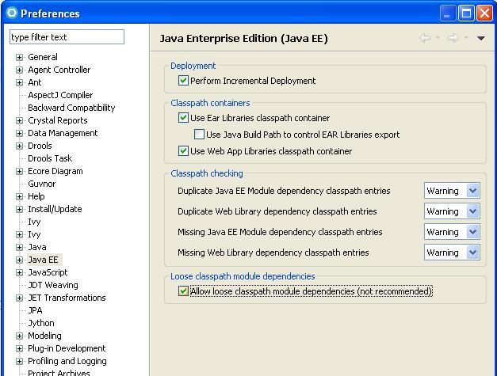

WTP is the <a href="http://www.eclipse.org/webtools/">Web Tools Platform</a> project from the Eclipse fondation which allow to easily develop, launch and debug web applications. IvyDE can be used with this framework, but only from the version 2.0 of WTP, which is supported since Eclipse 3.3. In the properties of your project configured to use WTP, there is a section "Java EE Module Dependencies". There should be your configured IvyDE classpath container listed, usually with the name "ivy.xml [*]". Just select it and the Ivy dependencies will be deployed as well. <center><img src="../images/wtp.jpg"/></center> This has been successfully tested with Eclipse 3.3 and WTP 2.0, Eclipse 3.4 and WTP 3.0. <h1>IBM Rational Application Developer (RAD) 7.5.3+</h1> Users of RAD 7.5.3 will notice that the classpath container is not listed in the table. RAD prevents the deployment of classpath containers by default. To allow this behavior, selection Windows -> Preferences -> Java EE. Check "Allow loose classpath module dependencies". RAD will present you with a warning message. To enable the behavior, you need to check the option again in the popup and click Yes. <center></center> <b>Note:</b> due to a bug in RAD 7.5.3, this IBM specific property is not persisted when we close the workbench and reopen it. To work around this: <ul> <li>export RSA preferences ( File -> Export: General -> Preferences)</li> <li>open exported .epf file and replace /instance/org.eclipse.jst.j2ee/org.eclipse.jst.j2ee.preferences.allowClasspathDep=false with /instance/org.eclipse.jst.j2ee/org.eclipse.jst.j2ee.preferences.allowClasspathDep=true</li> <li>load modified epf</li> </ul>